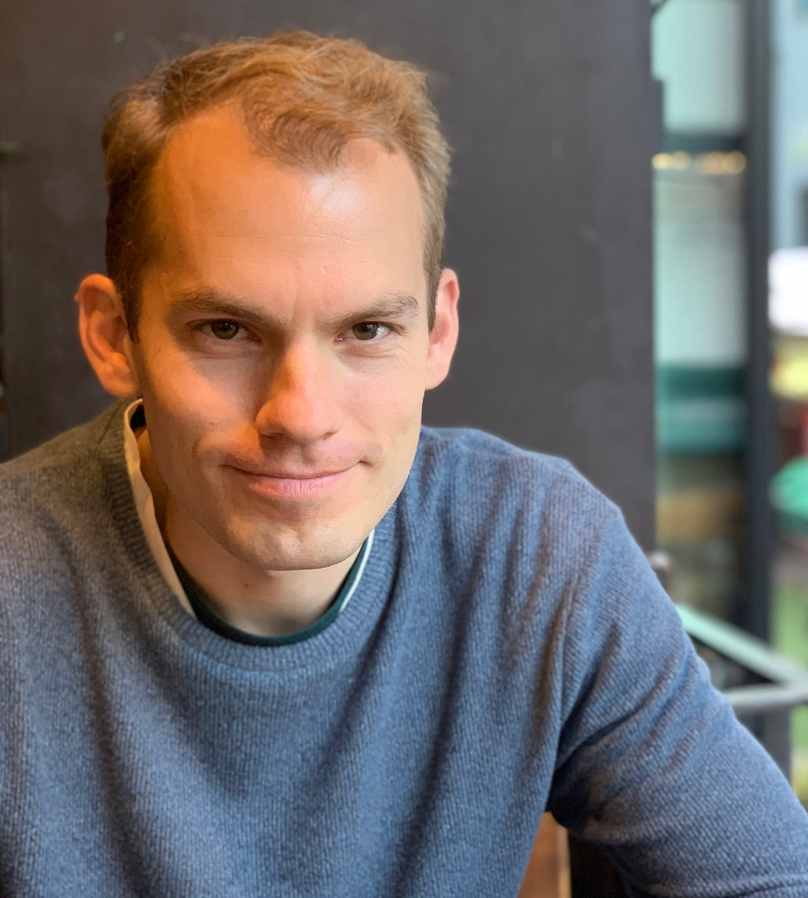

CVPR 2024 Workshop on
Representation Learning with Very Limited Images
-Zero-shot, Unsupervised, and Synthetic Learning in the Era of Big Models-
June 18th (PM), 2024
<Related Workshops by Organizers>
The 2nd Workshop on LIMIT
We propose the 2nd workshop on “Representation Learning with Very Limited Images: Zero-shot, Unsupervised, and Synthetic Learning in the Era of Big Models” in conjunction with CVPR 2024. At this very moment, the era of ‘foundation models’ heavily relies on a huge amount (>100M-order data) of samples inside of a training dataset. We have witnessed that this kind of large-scale dataset tends to incur ethical issues such as societal bias, copyright, and privacy, due to the uncontrollable big data. On the other hand, the setting of very limited data such as self-supervised learning with a single image or synthetic pre-training with generated images are free of the typical issues. Efforts to train visual/multi-modal models on very limited data resources have emerged independently from various academic and industry communities around the world. This workshop aims to bring together these various communities to form a collaborative effort and find brave new ideas.
Broader Impact
It was an established fact that learning representations were acquired by “human-annotated labels” from “large amount of real data”. The trained models were additionally fine-tuned and applied to each visual task. However, recent problems with large-scale datasets are: (i) biased datasets could lead to e.g., gender and racial discrimination, (ii) suspension of public dataset access due to offensive labels, (iii) ethically problematic images are mixed in a large-scale dataset. As long as a large-scale dataset consisting of real images are used, the situation is endlessly problematic. Here, a recent study reveals that a learning strategy even with very few real images [1] and supervision from a mathematical formula [2] successfully acquires a learned representation of how to see the real world. Moreover, a pre-trained model with artificially generated data outperformed ImageNet-21k pre-training [3] and was found to acquire higher robustness [4]. Thus, it is clear that self-supervised learning (SSL), formula-driven supervised learning (FDSL), and synthetic training in the very limited data setting can also develop a DNN model with high accuracy and safety. Moreover, in the era of foundation models, while these critical issues remain unresolved, there’s growing attention on how pre-training can be achieved with very limited data, whether it’s possible with synthetic images or generative models without any real images, and how adaptation can be carried out using zero/one/few-shot or very limited data. Although these topics have not yet attracted much attention in the computer vision field, these research topics must be focused on since they are expected to be a means to replace learning with real data and resolve ethical issues in the future.
- [1] Yuki M. Asano, Christian Rupprecht, Andrea Vedaldi, "A critical analysis of self-supervision, or what we can learn from a single image," ICLR 2020. [PDF] [Project]
- [2] Hirokatsu Kataoka, Kazushige Okayasu, Asato Matsumoto, Eisuke Yamagata, Ryosuke Yamada, Nakamasa Inoue, Akio Nakamura, Yutaka Satoh, "Pre-training without Natural Images," IJCV 2022. [PDF] [Project]
- [3] Hirokatsu Kataoka, Ryo Hayamizu, Ryosuke Yamada, Kodai Nakashima, Sora Takashima, Xinyu Zhang, Edgar Josafat Martinez-Noriega, Nakamasa Inoue, Rio Yokota, "Replacing Labeled Real-image Datasets with Auto-generated Contours," CVPR 2022. [PDF] [Project]
- [4] Dan Hendrycks, Andy Zou, Mantas Mazeika, Leonard Tang, Bo Li, Dawn Song, Jacob Steinhardt, "PixMix: Dreamlike Pictures Comprehensively Improve Safety Measures," CVPR 2022. [PDF] [Project]
* The listed papers are proposed by organizers or invited speakers
Invited Talk 1: Phillip Isola (MIT)

TBD
Invited Talk 2: Zeynep Akata (Helmholtz Munich/TUM)

Zeynep Akata is a Liesel Beckmann Distinguished professor of Computer Science at Technical University of Munich and the director of the Institute for Explainable Machine Learning at Helmholtz Munich. After completing her PhD at the INRIA Rhone Alpes with Prof Cordelia Schmid (2014), she worked as a post-doctoral researcher at the Max Planck Institute for Informatics with Prof Bernt Schiele (2014-17) and at University of California Berkeley with Prof Trevor Darrell (2016-17) and as an assistant professor at the University of Amsterdam with Prof Max Welling (2017-19). Before moving to Munich in 2024, she was a professor of computer science (W3) within the Cluster of Excellence Machine Learning at the University of Tübingen. She received a Lise-Meitner Award for Excellent Women in Computer Science from Max Planck Society in 2014, a young scientist honour from the Werner-von-Siemens-Ring foundation in 2019, an ERC-2019 Starting Grant from the European Commission, The DAGM German Pattern Recognition Award in 2021, The ECVA Young Researcher Award in 2022 and the Alfried Krupp Award in 2023. Her research interests include multimodal learning and explainable AI. (Refer from: https://www.eml-unitue.de/people/zeynep-akata)
Paper Submission / Call For Papers
- Guide for Authors. We invite original research papers. All submissions should be anonymized, formatted according to the template of CVPR 2024 (Recommended: 4-8 pages excluding references): https://cvpr.thecvf.com/Conferences/2024/CallForPapers.
- Microsoft CMT Site. Please submit your paper here: https://cmt3.research.microsoft.com/CVPRLIMIT2024
- {Self, Semi, Weakly, Un}-supervised learning with very limiteda data
- {Zero, One, Few}-shot learning with very limited data
- Synthetic training with computer graphics
- Model training from generative models and/or formula-generated data
- Training convnets, vision transformers, and more models with relatively fewer resources, Vision+X and multi-modality to accelerate a learning efficiency
- New datasets, benchmarks, and meta analysis
- Brave new ideas related to above-mentioned topics or create a novel field
Important Dates
- Submission deadline: March 21st, 2024
- Notification: April 4th, 2024
- Camera-ready deadline: April 11th, 2024
- # All dates are following Pacific Time (PT).
Organizers